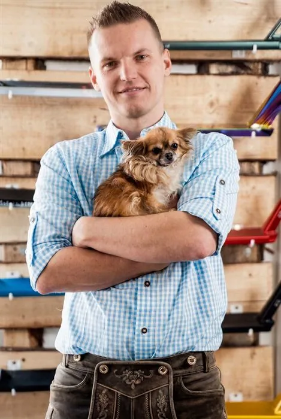
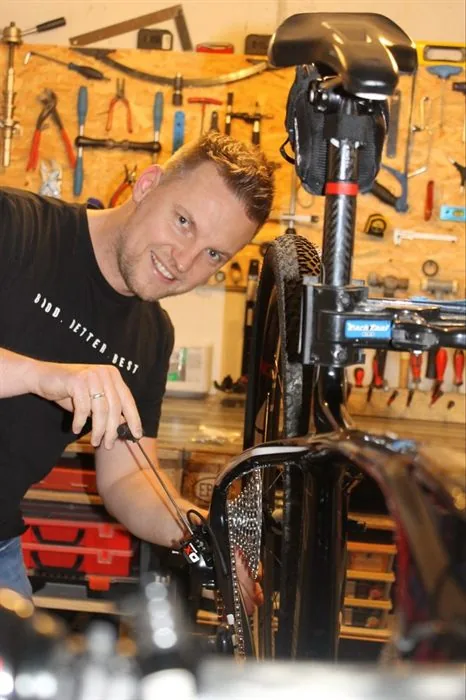
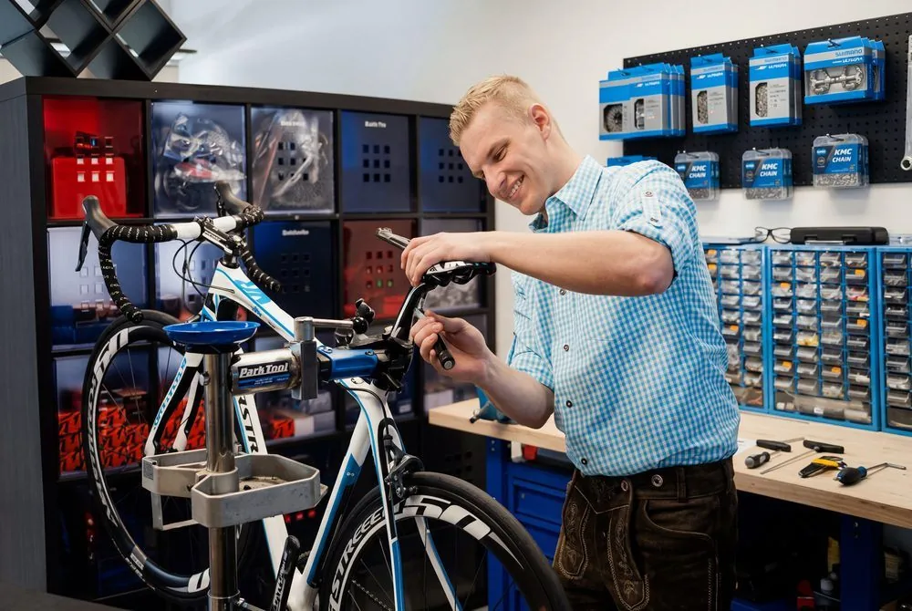

Wissen & Erfahrung aus mehr als 27 Jahren. Ohne etwas kaufen zu müssen!
Niemals mehr als Du brauchst, aber immer mehr als Du erwartest!



Ich bin Mathias (45) und Fahrräder begleiten mich mein gesamtes Leben. Seit inzwischen mehr als 27 Jahren auch beruflich. Ob als Mechaniker, als Verkäufer, als Kundendienstmitarbeiter bei KTM Fahrrad, mit eigenem Bike Shop namens „FEINSCHLIFF BIKES" und natürlich als begeisterter Radfahrer.
Ich kenne die Methoden der Industrie. Das Marketing dahinter und was ein wirklich gutes, ehrliches Verkaufsgespräch ausmacht. Diese Seite ist mein Ort, um dir genau das weiterzugeben. Erfahrung und Wissen, mit dem ich Dir weiterhelfen möchte. Genau so, wie ich meinen Freunden helfe. Ganz ohne Verkaufsdruck und ohne Markenwerbung.



Für wen ist RadlHias.TV?
Nicht jeder Radfahrer oder Fahrradkäufer hat die gleichen Bedürfnisse oder die gleichen Ziele. RadlHias.TV ist mein Kanal, mit dem ich Dir mehr als nur ein Verkaufsgespräch anbiete. Ich möchte Dich unabhängig, kostenlos und ganzheitlich beraten, ohne Dir etwas verkaufen zu müssen. Ich möchte einfach nur, dass Du mit deinem Fahrrad eine gute Zeit hast.
Das liest sich sehr nobel. Aber was habe ich davon?
In mehr als 27 Jahren habe ich auf verschiedenen Ebenen gelernt, wie ein Business und speziell die Fahrradbranche funktioniert. Und wie jede andere Branche lebt auch diese vom Verkauf.
Das ist legitim. Jedoch sollte der reine Verkauf nicht das Ziel sein. Während meiner Ausbildung zum Einzelhandelskaufmann (Fachrichtung Radsport) habe ich zuerst gelernt, worum es in einem Verkaufsgespräch geht. Nämlich um den Bedarf des Kunden – und darum, das Produkt zu finden, das zu genau diesem Bedarf und den Zielen des Kunden passt.
In meiner Laufbahn habe ich immer wieder Situationen erlebt, die genau das nicht zum Ziel hatten.
Mein Ziel ist es, meine Erfahrung weiterzugeben. Menschen mit ihrem Fahrrad glücklich werden zu lassen. Und nicht den Konzernen die Taschen zu füllen, sondern meiner Community den Rücken zu stärken.

Fahrrad kaufen, aber unsicher welches?
Der Fachhandel zeigt dir oft, was gerade auf Lager ist oder die beste Marge bringt. Ich zeige dir, worauf es bei deinem Einsatzzweck tatsächlich ankommt – egal ob Alltagsrad für die Stadt, Mountainbike fürs Gelände oder Rennrad für die Straße. Mit dem Fahrrad-Konfigurator findest du in wenigen Schritten heraus, welcher Bike-Typ wirklich zu deinem Fahrstil und Budget passt.
Ein gebrauchtes Fahrrad im Blick?
Rahmenschaden, verschlissene Lager, falsche Rahmengröße – das sind die Fehler, die die meisten Käufer beim Gebrauchtkauf machen. Mit dem Gebraucht-Check gehst du strukturiert vor statt nach Bauchgefühl, und erkennst in wenigen Minuten, ob sich der Kauf wirklich lohnt.
Schmerzen oder Unwohlsein beim Radfahren?
Rückenschmerzen, taube Finger oder Knieprobleme sind fast immer eine Frage der richtigen Einstellung, nicht des falschen Rahmens. Mit den Bike-Fitting-Grundlagen findest du heraus, welche Anpassungen an Sattel, Lenker und Position dir sofort mehr Komfort bringen – oft ganz ohne neues Material.
Dein Fahrrad selbst warten und verstehen?
Kette reinigen, Reifendruck richtig einstellen, erkennen wann ein Bauteil wirklich hin ist und wann es nur ein Verkaufsgespräch ist – nach 27 Jahren im Bike-Business weiß ich, worauf es ankommt. Mit dem Reifendruck Rechner und den weiteren Tools sparst du dir unnötige Werkstattbesuche und unnötige Ausgaben.
"Tour de Hias" spielen & Rad-Service gewinnen
Weiche den kleinen Mädchen, Autos & Schlaglöchern aus und sammle Sterne – direkt im Browser, ganz ohne Installation.
- Frist Bis 31.08.2026 die höchste Punktzahl erreichen
- Preis Ein Rad-Service bei mir (exklusive Material)
- Teilnahme Nur für Biker aus 5120 St. Pantaleon
Aktuelle Artikel
Tipps, Tests und ehrliche Erfahrungen rund ums Fahrrad.
Du hast Fragen zu deinem Fahrrad, einen Verbesserungsvorschlag oder willst einfach Hallo sagen? Ich freue mich über jede Nachricht.
✉️ E-Mail schreibenKein Formular, kein Tracking – deine Nachricht geht direkt an mich.